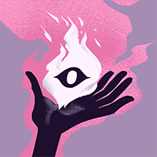
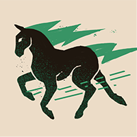
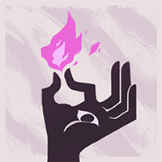
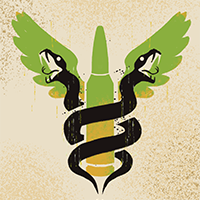
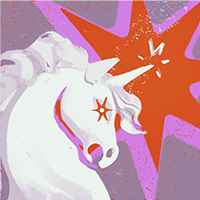
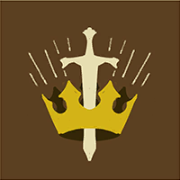
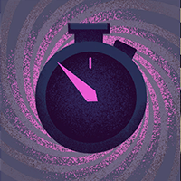
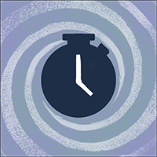
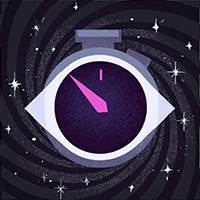

Spirit Graves
54.5%win rate
3,239matches
38%of Graves players
Most common
-

Improved Spirit83% -

Extra Stamina77% -

Extra Spirit76% -

Restorative Shot72% -

Arcane Surge72% -

Heroic Aura (only in this build)67%
Defining
-

Superior Cooldown (only in this build)56% · 18% elsewhere -

Compress Cooldown (only in this build)56% · 19% elsewhere - Arcane Surge72% · 43% elsewhere
-

Transcendent Cooldown (only in this build)39% · 12% elsewhere - Heroic Aura (only in this build)67% · 43% elsewhere
- Improved Spirit (only in this build)83% · 61% elsewhere